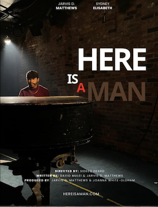
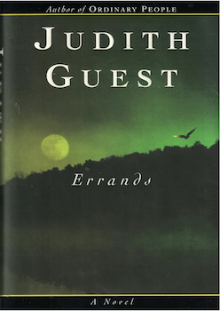
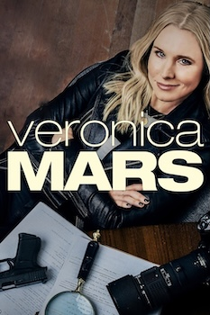
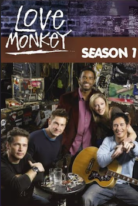
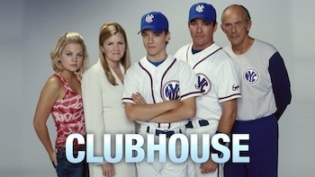
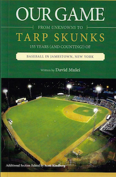

Work
Tranquility Grove | 1844↗
songs and recitations
Eight documentary poems inspired by the largest abolitionist gathering in American history.
On August 2, 1844, Frederick Douglass and William Lloyd Garrison appeared in Tranquility Grove — a wooded clearing in Hingham, Massachusetts — with dozens of the mass movement’s most powerful and persuasive leaders. The Hutchinson Family, America’s first celebrity protest singers, led their anthems. Only a small fraction of what was said and sung that day was recorded, but the speeches, sheet music, verse, and memoirs remain. Out of that source material, I devised Tranquility Grove 1844, meant to express both abolitionism’s deep divisions and the shared conviction to end slavery that held them together.
Text by: David Mulei
after Jesse Hutchinson, Jr., Almira Seymour, John Quincy Adams, Charles Lenox Remond, Ralph Waldo Emerson, Abby Kelley, Frederick Douglass, and Nancy Amelia Woodbury Priest
The Mystic Rose
artistic director & librettist, sacred oratorio
In 1902, Redemptorist priest Rev. F.L. Kenzel wrote Pilate's Daughter, a play seen by over three million people across 60-years, including a run on Broadway in 1914. For the Basilica's 150th anniversary, composer Felicia Sandler and I created The Mystic Rose—a reimagining of "America's Oldest Passion Play." Drawing from Kenzel's original script and the writings of four women mystics—St. Therese of Lisieux, Julian of Norwich, St. Catherine of Siena, and St. Teresa of Avila—the oratorio explores themes of faith, suffering, and divine love through the story of Claudia, daughter of Pontius Pilate.
Composer: Felicia Sandler (award-winning New England Conservatory faculty)
Music Director: Julia McKenzie (Boston Early Music Festival, New England Conservatory)
Featured performers: Janet Stone, soprano (GRAMMY®-nominated, Skylark Vocal Ensemble); Elise Groves, soprano (Handel + Haydn Society); Caroline Olsen, mezzo-soprano (Handel + Haydn Society); Matthew Anderson, tenor (Emmanuel Music Bach Cantata Series); Marcus Schenck, bass-baritone (Boston Conservatory Opera); Heidi Braun-Hill, violin (concertmaster, Orchestra of Emmanuel Music); Yeolim Nam, violin (Boston Philharmonic Orchestra); Mark Berger, viola (Lydian String Quartet); Leo Eguchi, cello (MIT Symphony Orchestra); Klara Poznachowska, harp (Berklee College of Music)
Produced by: Arts@theBasilica
Venue: Basilica of Our Lady of Perpetual Help, Boston, MA
Here Is a Man
co-writer (w/ Jarvis D. Matthews), short film

A dramatic portrait of soul legend Donny Hathaway on a single day in 1971. Co-developed with actor and writer Jarvis D. Matthews, the film was shot at the historic Bitter End club in Greenwich Village—the same venue where Hathaway recorded his legendary live album. Funded by a City Artist Corps grant from the New York Foundation for the Arts.Director: Sideeq Heard
Producer: Joanna White-Oldham
Cast: Jarvis D. Matthews (Donny Hathaway), Sydney Elisabeth (Roberta Flack), Shaquile Hester
Production Companies: JWO Media, Yoji Productions
Festivals: Official Selection, People's Film Festival (2024); Official Selection, Katra Film Series (2023)
Errands
screenwriter (w/ Rudi Schwab), limited series pilot script

Adapted from Judith Guest's novel Errands, her third following Ordinary People (adapted into the 1981 Academy Award Best Picture, directed by Robert Redford). When Keith Abadi's brain cancer returns, his wife Annie and their three children struggle to maintain their footing. The adaptation reconstructs Greater Detroit's ethnic and economic landscape while preserving the novel's intimate psychological portrait of a family's retreat to their Lake Huron cabin. Developed in close collaboration with the author.Source: Errands (Ballantine Books, 1997)
Painted Porch Audio Series
artistic director, audio series
A scripted audio series based on classical and historical sources. Each track translates the source text into dramatic performance, merged with original field recordings collected during the pandemic.
Hero & Leander — Young lovers, desperate to fall back into each other's arms but separated by an impassable sea. Ovid's Heroides (Showerman, 1914). Field Recordings: Plymouth, MA and Lake Placid, NY Listen
Overheard: Tolstoy — Two friends exit a cab, absorbed in urgent conversation. The younger man (Michael) has a theory of the soul. The older man (Ivan) has a story to tell. Leo Tolstoy's short story "After the Ball" (1903) Listen
American Boy — Eighteen years after he wrote this text, TR's beloved youngest son Quentin is shot down in the skies over France. "What We Can Expect of the American Boy" (Essay printed May, 1900, St. Nicholas magazine) Listen
Knaves: Part One — Bernard Mandeville's "Fable of the Bees," the story of a society destroyed by its desire for virtue. The Grumbling Hive: or Knaves turn'd Honest (1705) Listen
Knaves: Part Two — George Eliot's defense of a life ordered around altruism. Felix Holt, The Radical (1866) and The Choir Invisible (1884) Listen
Household — Husband and wife endure the domestic hardships of a foreign service post. Eavesdrop on a day in the life. Household Effects, written by David Mulei Listen
Director: Maureen Payne-Hahner (Hero & Leander, Overheard: Tolstoy, American Boy)
Featured Performers: Mitch Tebo, Ken Baltin, Jarvis D. Matthews, Jamie Geiger, Kim Park, Britian Seibert, Todd Yard
Sound Engineer: Josh Wilson
The Crowded Hour
playwright, full-length drama
Summer, 1918. Sixty-year-old Theodore Roosevelt is ten years out of office and shattered by the news that his youngest son, Quentin, has been killed in action in World War I. With his three remaining sons still at the front, TR shoulders the blame for inspiring his reckless boys to self-destruction. The Crowded Hour unfolds over six months, a period generally glossed-over in biographical accounts, which reveal TR to be a man divided. Publicly, he struggles to mount an improbable political comeback. Privately, he stumbles through the darkness with his wife, Edith, and two daughters at their Sagamore Hill home in Oyster Bay, Long Island. As his once-powerful body and mind come apart, he is haunted by visions of three generations of Roosevelts.
Development History: Sheen Center for Thought & Culture (NYC); Manhattan Theatre Club (NYC); Beachwood Living Room Series (LA)
Featured Performers: Mitch Tebo, Jan Buttram, Alex Mandell, Russell Jordan, Lucas Neff, Jamie Geiger, Britian Seibert, Jason Liebman, Lori Gardner, Ryan Sheehan, Jake Murphy, Emily Jackson, Emilea Wilson, Sara Malinowski, Kaela Shaw
Director: Maureen Payne-Hahner (founding member, The Gift Theatre; artistic director, Writers Innovative Network)
Producing Partner: Writers Innovative Network
Stubborn Things
playwright, full-length drama
Real-life expert witness reports and courtroom testimony are woven into the action of this historical drama, which begins six weeks prior to the start of the 2000 Irving v. Lipstadt libel trial. Gail is a research assistant struggling to prove that notorious Holocaust denier David Irving's revisionist claims are not only wrong, but are hateful lies. But as she examines a seemingly endless pile of horrific documentary evidence from her cramped basement office, Gail is met with new and unwelcome challenges: her fellow research assistant is leaving the project; her closest friend doubts the value of her work; and now, most disturbingly, she finds herself face to face with a menacing vision of Irving himself. As Gail races to meet her deadline, she's pressed to the limits of her fierce self-reliance.
Development History: Royal Family Performing Arts, Times Square (NYC); Beachwood Living Room Series (LA); Arena Stage at Theatre of Arts; Beachwood Living Room Series (LA)
Featured Performers: Flor de Liz Perez, Mitch Tebo, Alex Mandell, Jessica Morris, Philip Proctor, Paula Cale Lisbe, Marin Hinkle, Andrew Borba
Directors: Maureen Payne-Hahner, Martha Demson, Paul Wagar, David Zabel
Producing Partner: Writers Innovative Network
Household Effects
(FOREIGN SERVICE, DOMESTIC DRAMA)
playwright, full-length drama
Set in the foreign service, the story of mid-level consular officer Paul Rego and his wife, Laura, as they struggle to endure another hardship post. Rising from a blue-collar background, Paul has clawed his way up the lower rungs of the State Department's grueling up-or-out career ladder. It's taken ten years of pack-outs, countless bureaucratic run-arounds, and often harrowing living conditions overseas but, finally, a prestigious position is within sight. Through the course of two dreadful, darkly comic days of personal and professional failure, Paul and Laura are forced to confront the calculating people they've become.
Development History: The Road Theatre Co; Open Fist @ The Matrix Theatre, First Look Festival; Rogue Machine; Upright Citizens Brigade
Directors: Neil H. Weiss, Martha Demson
Featured Performers: Justin Okin, Stephanie Michels, Scott Mosenson, Challen Cates, Hollace Starr, Resa Safai
Veronica Mars
story editor (w/ writing partner Jonathan Moskin), television series · The CW · 2006-2007

Story editor for the third season of this teen noir starring Kristen Bell and featuring Ed Begley Jr. Created by Rob Thomas (creator, Cupid; YA novelist, Rats Saw God) with executive producer Diane Ruggiero (creator, That's Life). Veronica Mars was named the #1 show of 2006 by the Chicago Sun-Times and appeared on AFI's TV Programs of the Year.Produced by: Warner Bros. Television, Silver Pictures Television
LOVE MONKEY
staff writer, television series · CBS · 2006

Staff writer for this music industry dramedy co-starring Tom Cavanagh and Judy Greer, guest stars including Dr. John, Ben Folds, Aimee Mann, and John Mellencamp. Created by Michael Rauch, based on Kyle Smith's novel (Harper Perennial, 2005). Writing staff: John Wirth (Dark Winds, Hell on Wheels), Melissa Rosenberg (Dexter, Jessica Jones, Twilight), and award-winning playwrights Justin Tanner and Elyzabeth Gregory Wilder.Produced by: Paramount Television, Sony Pictures Television
CLUBHOUSE
staff writer, television series · CBS · 2004

Staff writer for this family drama co-starring Christopher Lloyd and Mare Winningham, about a teenage batboy for a fictional New York baseball team. Created by Daniel Cerone, who went on to serve as showrunner on the Peabody Award-winning Dexter. Based on the memoir Bat Boy: Coming of Age with the New York Yankees (Knopf Doubleday, 2005) by Matthew McGough. Writing staff included Joseph Dougherty (Thirtysomething), Sheila Lawrence (Gilmore Girls, The Marvelous Mrs. Maisel), Ashley Gable (Buffy the Vampire Slayer, The Mentalist), Paul Manning (ER), and Leonard Dick (Lost, The Good Wife).Produced by: Icon Productions, Spelling Television
OUR GAME: FROM UNKNOWNS TO TARP SKUNKS
155 years (and counting) of baseball in Jamestown, New York
nonfiction book · 2020

An enhanced reprint of Across the Seams (Amereon Limited, 1998). The original volume began in the summer of 1993 as an undergraduate honors thesis—traveling with the team, conducting interviews, and researching local archives. Twenty-two years later, Our Game updated the story and framed this exceptional 155-year history through the lens of community-building and civic stewardship. The book was accepted into the permanent collection of the National Baseball Hall of Fame in Cooperstown, NY in 2021.Additional Section Edited by: Scott Kindberg
Publisher: Chautauqua Sports Hall of Fame